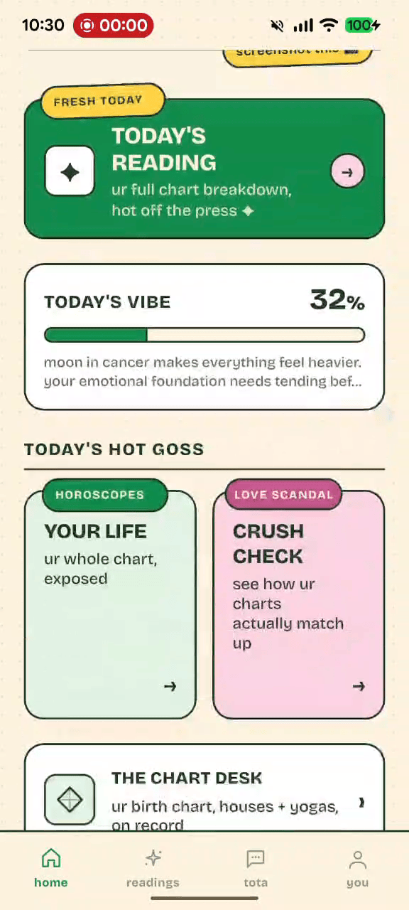
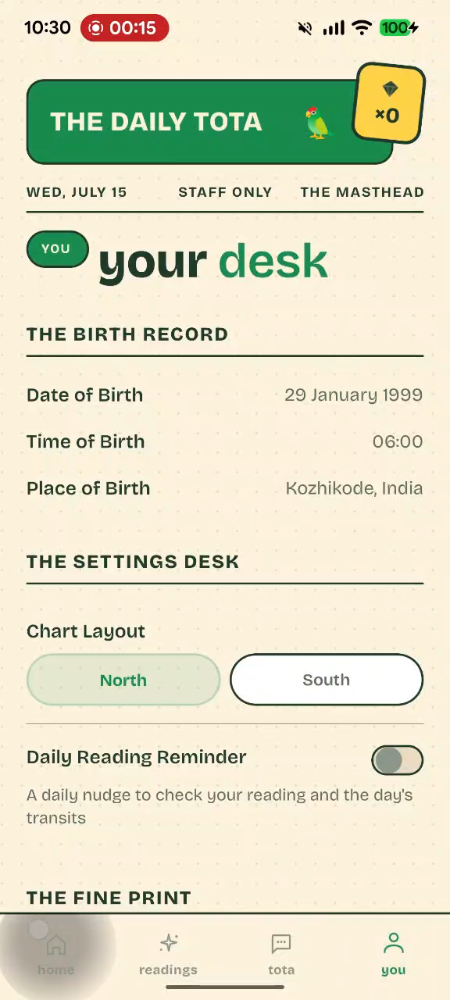
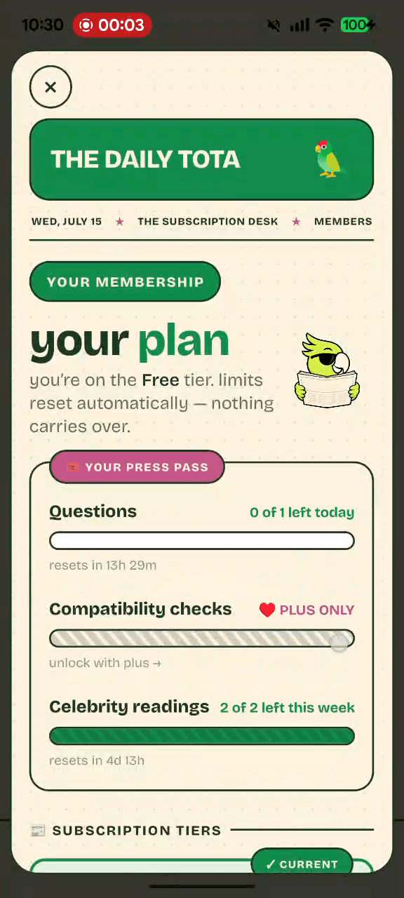

Astrology with a headline and a point
Tota gives you the mood, the transit, and what matters today without burying it under filler.
TODAY · FRESH TODAY · HOT OFF THE PRESS
Ask Tota makes astrology feel less like homework and more like something you'd open on purpose. You get your daily reading, compatibility checks, chart details, and a voice that doesn't sound like it was written by a textbook.


TODAY'S EDITION
The app already has a strong look: paper texture, bold outlines, green and pink accents, and a newsroom tone. The landing page now follows that instead of fighting it.
Tota gives you the mood, the transit, and what matters today without burying it under filler.
It reads like a fun column, not a chart dump, which makes the feature easier to get and easier to pass around.
Birth info, layout preferences, reminders, and account settings all sit in one place that makes sense.
THE DESKS
That structure is part of the charm. It gives the product personality without making navigation confusing.
Your daily mood, the transit behind it, and the part worth paying attention to.
Compatibility reads like a column, not a spreadsheet.
Your chart details, settings, and reminders in one place.
Free, Plus, and Pro are easy to compare, with clear limits and unlocks.

MEMBERSHIP
The plan section now explains what resets, what unlocks, and why someone would pay, in plain language.
Enough to try the daily edition and see if Tota is your thing.
More questions, more checks, and enough room for people who use it often.
For people who want the limits gone and the whole product open.
LAUNCH DESK
Launching soon on iOS and Android. If you want the first edition when it drops, get in early.
FAQ
This section is here on purpose. It gives direct answers to the questions people are most likely to search before they install.
Ask Tota is an astrology app for daily readings, compatibility checks, birth chart insights, and personalized guidance.
You can read your daily update, check compatibility, review your chart details, and manage your profile and membership in one place.
Yes. Ask Tota starts with a free tier, and paid plans open up more questions, more checks, and more access.
It is launching soon on iOS and Android. You can request early access from this page.